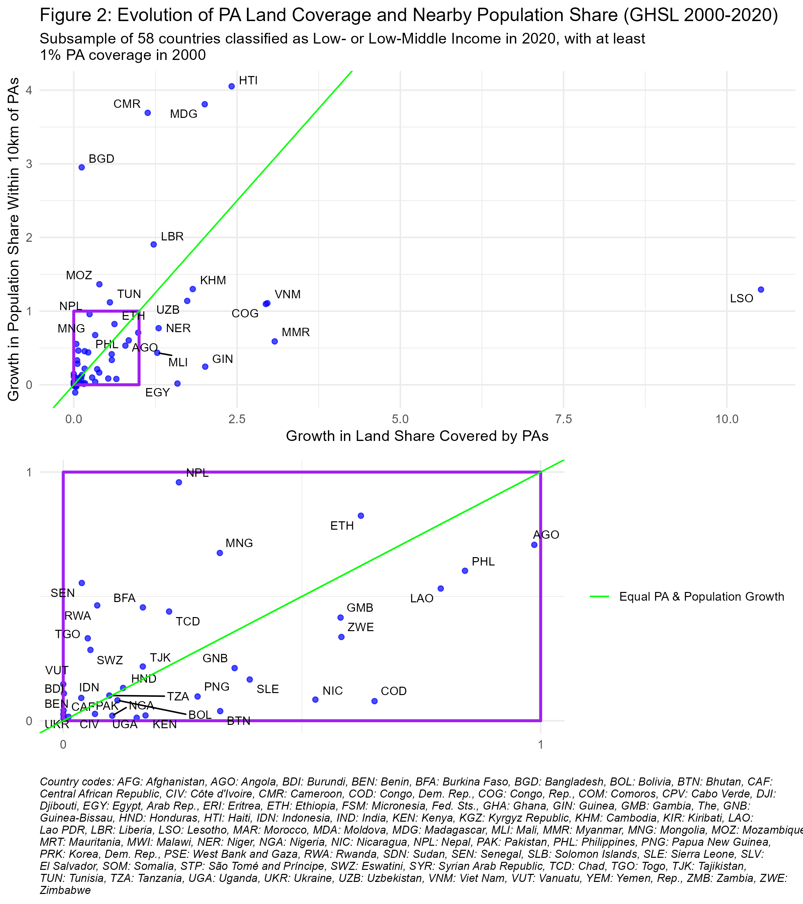

| Table 1: PA Coverage and Population Proximity (2000-2020) | ||||||||
|---|---|---|---|---|---|---|---|---|
| Percentage of land and population within and near protected areas | ||||||||
| % within PAs | % within 10km of PAs | |||||||
| Country | Land | Population | Land | Population | ||||
| 2000 | 2020 | 2000 | 2020 | 2000 | 2020 | 2000 | 2020 | |
| Total | 9.3 | 12.9 | 1.8 | 2.7 | 21.0 | 27.2 | 16.2 | 21.8 |
| Total without India | 10.2 | 14.1 | 2.8 | 4.2 | 22.9 | 29.5 | 26.1 | 33.6 |
| Afghanistan | 0.1 | 3.7 | 0.1 | 1.1 | 0.6 | 6.0 | 0.6 | 13.6 |
| Angola | 5.4 | 10.8 | 0.9 | 1.3 | 9.0 | 15.8 | 3.0 | 5.0 |
| Bangladesh | 4.0 | 4.5 | 0.6 | 1.0 | 9.8 | 17.8 | 4.6 | 18.3 |
| Benin | 23.7 | 23.7 | 5.2 | 5.7 | 54.9 | 54.9 | 25.8 | 26.5 |
| Bhutan | 38.5 | 51.1 | 11.2 | 11.6 | 72.0 | 80.5 | 56.2 | 58.4 |
| Bolivia | 20.9 | 23.3 | 21.1 | 25.8 | 33.4 | 38.4 | 58.3 | 63.0 |
| Burkina Faso | 14.2 | 16.6 | 6.1 | 7.8 | 33.3 | 38.8 | 31.5 | 45.8 |
| Burundi | 5.4 | 5.4 | 2.8 | 2.6 | 40.8 | 41.4 | 39.6 | 43.9 |
| Cabo Verde | 0.0 | 18.4 | 0.0 | 14.1 | 0.0 | 94.9 | 0.0 | 94.6 |
| Cambodia | 14.1 | 39.9 | 2.4 | 7.7 | 34.3 | 68.5 | 13.6 | 31.3 |
| Cameroon | 5.2 | 11.1 | 0.9 | 6.0 | 13.0 | 25.4 | 5.2 | 24.4 |
| Central African Republic | 14.0 | 14.0 | 2.0 | 1.8 | 21.8 | 21.9 | 22.2 | 23.1 |
| Chad | 11.4 | 13.9 | 6.5 | 7.7 | 14.7 | 18.4 | 11.7 | 16.8 |
| Comoros | 0.8 | 33.0 | 1.7 | 38.7 | 6.5 | 97.8 | 21.7 | 98.9 |
| Congo, Dem. Rep. | 9.0 | 14.9 | 3.9 | 7.3 | 14.9 | 23.0 | 22.7 | 24.5 |
| Congo, Rep. | 9.3 | 36.5 | 3.3 | 26.9 | 16.3 | 53.1 | 31.7 | 66.4 |
| Côte d'Ivoire | 21.5 | 21.7 | 10.0 | 9.3 | 69.5 | 70.0 | 71.4 | 72.6 |
| Djibouti | 0.0 | 1.3 | 0.0 | 0.8 | 0.0 | 8.3 | 0.0 | 7.8 |
| Egypt, Arab Rep. | 4.3 | 11.2 | 0.4 | 0.5 | 6.5 | 15.7 | 11.2 | 11.3 |
| El Salvador | 0.1 | 8.6 | 0.0 | 3.8 | 8.2 | 80.7 | 4.2 | 90.3 |
| Eritrea | 0.0 | 0.0 | 0.0 | 0.0 | 0.0 | 1.3 | 0.0 | 1.6 |
| Eswatini | 4.1 | 4.4 | 1.6 | 1.5 | 28.3 | 38.4 | 30.7 | 39.5 |
| Ethiopia | 10.4 | 17.0 | 3.8 | 7.7 | 17.6 | 27.2 | 9.8 | 17.8 |
| Gambia, The | 5.1 | 8.0 | 2.8 | 8.8 | 32.2 | 61.8 | 55.8 | 78.9 |
| Ghana | 14.7 | 14.9 | 6.2 | 5.0 | 56.9 | 57.2 | 69.1 | 68.9 |
| Guinea | 7.9 | 23.7 | 4.0 | 15.4 | 35.9 | 52.3 | 47.3 | 59.0 |
| Guinea-Bissau | 18.0 | 24.4 | 5.8 | 9.4 | 40.8 | 49.9 | 20.9 | 25.3 |
| Haiti | 2.2 | 7.4 | 1.0 | 3.2 | 16.6 | 46.0 | 10.8 | 54.4 |
| Honduras | 20.4 | 23.0 | 8.2 | 9.2 | 54.6 | 63.7 | 65.5 | 74.1 |
| India | 0.2 | 0.5 | 0.1 | 0.1 | 1.1 | 2.4 | 0.5 | 1.1 |
| Indonesia | 11.5 | 11.9 | 1.7 | 2.2 | 31.5 | 33.9 | 31.7 | 34.6 |
| Kenya | 10.8 | 12.7 | 4.0 | 4.2 | 32.4 | 38.2 | 59.4 | 60.7 |
| Kiribati | 0.0 | 4.6 | 0.0 | 0.0 | 0.0 | 4.6 | 0.0 | 0.0 |
| Korea, Dem. Rep. | 0.0 | 0.0 | 0.0 | 0.0 | 0.0 | 1.1 | 0.0 | 0.4 |
| Kyrgyz Republic | 6.4 | 6.7 | 1.2 | 1.1 | 21.6 | 23.3 | 15.1 | 14.7 |
| Lao PDR | 8.9 | 15.9 | 1.9 | 3.8 | 23.1 | 40.0 | 18.7 | 28.6 |
| Lesotho | 2.0 | 23.5 | 0.8 | 9.9 | 19.0 | 40.1 | 11.2 | 25.8 |
| Liberia | 1.7 | 3.7 | 0.2 | 1.8 | 6.6 | 12.3 | 3.5 | 10.2 |
| Madagascar | 4.3 | 12.8 | 1.6 | 8.0 | 14.0 | 35.8 | 8.4 | 40.2 |
| Malawi | 18.0 | 18.7 | 2.2 | 2.5 | 61.2 | 63.2 | 62.6 | 62.4 |
| Mali | 3.3 | 7.5 | 4.5 | 11.9 | 9.1 | 15.9 | 36.2 | 52.0 |
| Mauritania | 0.6 | 0.6 | 0.4 | 0.1 | 1.0 | 1.0 | 1.1 | 0.7 |
| Micronesia, Fed. Sts. | 0.0 | 0.0 | 0.0 | 0.0 | 0.0 | 0.0 | 0.0 | 0.0 |
| Moldova | 9.1 | 9.1 | 6.3 | 6.0 | 86.1 | 86.4 | 83.2 | 82.1 |
| Mongolia | 14.8 | 19.7 | 5.5 | 6.1 | 23.4 | 32.1 | 33.1 | 55.5 |
| Morocco | 0.6 | 2.2 | 0.2 | 1.5 | 2.6 | 11.9 | 5.8 | 19.5 |
| Mozambique | 21.1 | 29.4 | 4.5 | 9.8 | 33.2 | 42.9 | 11.9 | 28.2 |
| Myanmar | 1.6 | 6.6 | 0.4 | 1.1 | 7.2 | 18.1 | 8.0 | 12.7 |
| Nepal | 18.9 | 23.5 | 2.9 | 5.6 | 35.2 | 42.8 | 21.2 | 41.6 |
| Nicaragua | 14.0 | 21.5 | 5.5 | 9.3 | 42.2 | 55.8 | 65.0 | 70.5 |
| Niger | 7.4 | 17.0 | 2.7 | 5.3 | 9.5 | 20.7 | 6.0 | 10.7 |
| Nigeria | 12.0 | 13.3 | 4.4 | 4.6 | 57.6 | 59.4 | 53.0 | 54.0 |
| Pakistan | 7.2 | 7.7 | 1.7 | 1.7 | 15.2 | 17.1 | 10.8 | 11.1 |
| Papua New Guinea | 2.9 | 3.7 | 1.5 | 1.7 | 8.6 | 11.5 | 11.6 | 12.7 |
| Philippines | 8.7 | 15.9 | 3.6 | 5.2 | 30.3 | 54.6 | 36.3 | 58.3 |
| Rwanda | 8.7 | 9.3 | 0.3 | 0.7 | 29.7 | 41.3 | 21.5 | 31.5 |
| Senegal | 25.5 | 26.5 | 7.6 | 9.4 | 60.1 | 61.4 | 40.8 | 63.4 |
| Sierra Leone | 9.4 | 13.0 | 5.8 | 9.1 | 50.3 | 60.1 | 58.9 | 68.7 |
| Solomon Islands | 1.0 | 1.5 | 0.1 | 0.2 | 2.1 | 11.6 | 2.4 | 8.1 |
| Somalia | 0.0 | 0.0 | 0.0 | 0.0 | 0.1 | 0.2 | 0.1 | 0.1 |
| Sudan | 1.4 | 1.4 | 0.4 | 0.3 | 1.8 | 2.0 | 0.6 | 0.5 |
| Syrian Arab Republic | 0.0 | 0.1 | 0.0 | 0.0 | 0.2 | 0.9 | 0.1 | 0.6 |
| São Tomé and Príncipe | 0.0 | 32.5 | 0.0 | 9.1 | 0.0 | 93.8 | 0.0 | 58.2 |
| Tajikistan | 18.7 | 21.8 | 1.5 | 1.7 | 35.1 | 40.9 | 12.5 | 15.2 |
| Tanzania | 36.4 | 39.9 | 8.6 | 9.7 | 65.8 | 69.1 | 61.3 | 67.5 |
| Togo | 12.2 | 12.8 | 5.9 | 6.3 | 62.8 | 66.4 | 49.9 | 66.5 |
| Tunisia | 5.1 | 8.0 | 0.8 | 1.5 | 18.1 | 33.5 | 27.6 | 58.5 |
| Uganda | 13.2 | 15.2 | 6.7 | 7.3 | 72.0 | 74.2 | 86.0 | 87.0 |
| Ukraine | 18.1 | 18.1 | 9.6 | 9.2 | 82.5 | 82.5 | 85.6 | 86.4 |
| Uzbekistan | 2.9 | 7.9 | 0.9 | 1.1 | 8.1 | 17.0 | 4.9 | 10.6 |
| Vanuatu | 3.9 | 3.9 | 0.6 | 0.7 | 37.0 | 37.0 | 48.1 | 55.2 |
| Viet Nam | 1.9 | 7.6 | 0.9 | 2.0 | 14.9 | 40.1 | 10.4 | 21.9 |
| Yemen, Rep. | 1.0 | 1.1 | 1.0 | 2.0 | 1.5 | 2.6 | 3.2 | 10.4 |
| Zambia | 38.1 | 38.9 | 17.4 | 16.2 | 71.3 | 72.1 | 74.2 | 72.7 |
| Zimbabwe | 17.8 | 28.2 | 4.4 | 9.1 | 38.1 | 49.8 | 32.0 | 42.8 |
| Source: Analysis based on WDPA & WorldPop data (2000-2020) | ||||||||
Population Estimates within and around Protected Areas in Developing Countries (2000–2020)
Abstract
Protected areas (PAs) are the mainstream instrument for biodiversity conservation, but their creation and expansion can have mixed socioeconomic impacts on local populations. While some research has examined the implications of conservation policies, the number of people affected by PAs remains unquantified. We estimate the population living within and near PAs in 2000 to 2020 in 76 countries classified as low- and lower-middle-income by the World bank in 2020. Using Google Earth Engine, we integrate high-resolution WorldPop population data and the World Database on Protected Areas to analyze changes in PA-surrounding populations. Our result show that while terrestrial PA coverage in developing countries increased from 9.3% in 2000 to 12.9% in 2020, while the share of the population living within 10 km of a PA rose from 16.2% to 21.8% over the same period. This global average is largely driven by India, due to its demographic size and almost null PA expansion. For the 74 other countries, PA coverage increased from 10.2 % in 2000 to 14.1 % in 2020, and population living within 10 km of a PA from 26.1 % to 33.6 %. These findings shed light on the magnitude of the socioeconomic implications of conservation, particularly as global commitments aim to expand PA coverage to 30% of terrestrial land by 2030.
Introduction
Protected areas (PAs) are a cornerstone of biodiversity conservation, primarily established for ecological purposes (Maxwell et al. 2020). However, their creation can have mixed consequences for local populations (Kandel et al. 2022). On the one hand, PAs may impose socio-economic constraints by restricting access to natural resources (e.g., gathering, hunting, fishing, medicinal plants), limiting land availability, and curbing economic activities such as agriculture, livestock, and construction. On the other hand, they can provide benefits through compensation measures (e.g., local development projects, cash transfers), job creation (e.g., conservation-related employment, tourism), and enhanced ecosystem services (e.g., improved water resources, erosion control, fire prevention).
The impact of conservation on local well-being has long been debated in the scientific community (Adams et al. 2004). Yet, to our knowledge, no study has systematically quantified the number of people affected by PAs. While some research has examined population density trends around PAs [joppa2009b; geldmann2019], few have assessed the direct demographic implications of PA creation or expansion. Naidoo et al. (2019) supplementary survey-based estimates, but these appear only in supplementary materials, remain undiscussed, and lack reliability as far as proportion of population living near rural areas is concerned, as we will explain in the Discussion section.
The proportion of the population directly impacted by PAs is a critical issue for conservation planning, as it influences the distribution of benefits and burdens across social groups, shaping both local reception and long-term feasibility. This political dimension helps explain why communities near PAs are often framed as either “dependents”—receiving symbolic recognition but little tangible support—or “deviants”—facing restrictions and criminalization, while more influential conservation actors shape policies to their advantage (Schneider and Ingram 1993). PA creation and expansion are thus not purely ecological decisions but political ones, affecting policy support from local elites, voters, and decision-makers, who balance conservation goals with social welfare mandates (Mangonnet, Kopas, and Urpelainen 2022). Recognizing the demographic scope of PA-affected populations is therefore essential, as overlooking their socioeconomic realities risks generating resistance and conflict, ultimately threatening conservation legitimacy and effectiveness.
The rapid expansion of protected areas makes this issue even more pressing. Between 2000 and 2023, terrestrial PA coverage increased by 62%, now covering 17.6% of the global land area (UNEP-WCMC and IUCN 2024). This growth is set to accelerate with the COP15 global commitment to expand PA coverage to 30% of terrestrial land by 2030. While these efforts are crucial for biodiversity conservation, they also raise urgent questions about their socioeconomic implications. As more land falls under protection, more people will be affected, either through restricted access to resources or through conservation-driven economic opportunities. Gauging how many people live within or near newly designated PAs is essential for designing conservation policies that balance ecological goals with human well-being.
Methods
Study Area
The study focuses on countries classified by the World Bank as low-income and lower-middle-income economies in 2020. The World Bank’s income classification is widely used in international research and policy discussions, as it provides a standardized framework based on Gross National Income (GNI) per capita, adjusted using the Atlas method (Vaggi 2017). We did not include South Sudan and Timor Leste, as these countries did not exist in 2000.
We set a threshold of 10 km to define the treatment group, as is common practice to measure the socioeconomic impacts of protected areas within a 10 km radius in developing countries (Naidoo et al. 2019; Oldekop et al. 2016).
Data Sources
This study integrates three geospatial datasets: the World Database on Protected Areas (WDPA) for PA boundaries and establishment years, WorldPop for high-resolution population estimates, and geoBoundaries for the administrative area.
The WDPA (February 2025 edition), managed by the United Nations Environment Programme’s World Conservation Monitoring Centre (UNEP-WCMC), is considered as the most comprehensive and regularly updated global dataset on protected areas (Bingham et al. 2019). It is produced in collaboration with the International Union for Conservation of Nature (IUCN) and is updated monthly with submissions from national governments, non-governmental organizations, landowners, and local communities (UNEP-WCMC and IUCN 2023). The database provides spatial and tabular information on over 200,000 protected areas worldwide, covering both terrestrial and marine environments. Each PA in the WDPA is associated with attributes such as designation type, management category, governance structure, and legal status. Notably, the status year field records the year in which a site was formally designated, allowing for historical analyses of PA expansion.
The WorldPop dataset provides high-resolution (100-meter) population estimates based on a combination of census data, satellite imagery, and geospatial modeling techniques Stevens et al. (2015). It enables spatially explicit analyses of population distribution over time, making it well suited for evaluating human presence near protected areas. We use WorldPop’s 2000 and 2020 population datasets (WorldPop and CIESIN 2020).
The geoBoundaries dataset (v.6.0.0) provides an open, standardized, and regularly updated collection of political boundary data, including administrative divisions from ADM0 (national) to ADM4 (local) levels, covering over 200 countries and territories (Runfola et al. 2020). This dataset ensures spatial consistency and interoperability for geographic analyses, making it well suited for integrating administrative boundaries in global-scale research.
Analytical approach
We used Google Earth Engine (GEE), a cloud-based geospatial platform for large-scale environmental analysis (Gorelick et al. 2017). GEE enabled efficient processing of high-resolution population estimates within and around protected areas across 75 countries in 2000 and 2020, handling billions of pixels over 50 hours of computation, executed in six iterative batches due to system constraints.
We extracted protected area boundaries from the World Database on Protected Areas (WDPA), excluding UNESCO-MAB Biosphere Reserves, which often lack legal protection (Hanson 2022; Coetzer, Witkowski, and Erasmus 2014). We retained the WDPA polygons or the portion of them that intersect with national terrestrial boundaries from GeoBoundaries, retaining terrestrial PAs or the terrestrial portion of coastal PAs. Purely offshore PAs with no overlap on land were excluded. We generated binary PA presence layers at 100m resolution and created 10-km buffer zones to assess population proximity over time. To estimate populations inside and near PAs, we applied zonal statistics to WorldPop data, aggregating results at the national level for small and medium-sized countries. For large countries (>1,000,000 km²), we conducted the analysis at the subnational (ADM1) level using geoBoundaries to avoid memory usage limits. The output dataset provides national and subnational statistics on PA coverage and population proximity for 2000 and 2020. The GEE JavaScript code used for this analysis and the output dataset is included in the replication package available online [Include repo citation].
The results are further analyzed using R (R Core Team 2023) and helper functions (Wickham et al. 2019) to be displayed thanks to packages optimized for data visualisation (Wickham 2016; Slowikowski 2023; Wilke 2024) and tabular result presentation (Iannone et al. 2023).
Results
Population
Table 1 summarizes the extent of PAs and population proximity to PAs in low- and lower-middle-income countries. It presents the percentage of national land within PAs and the percentage of population within 10 km of PAs for the years 2000 and 2020. Due to its large population and relatively low PA coverage, India has an overwhelming impact on the global average for developing countries. To account for this, we provide two totals: one including India and another excluding it.
Terrestrial PA coverage in developing countries increased from 9.3 % in 2000 to 12.9 % in 2020, while the share of the population living within 10 km of a PA rose from 16.2 % to 21.8 % over the same period. This global average is largely driven by India, due to its demographic size and almost null PA expansion. For the 74 other countries, PA coverage increased from 10.2 % in 2000 to 14.1 % in 2020, and population living within 10 km of a PA from 26.1 % to 33.6 %.
The expansion of PA coverage was contrasted across countries. Some countries saw substantial increases, such as Bhutan (38.5% to 51.1%) and Cambodia (14.1% to 39.9%), while others experienced minimal growth (0.17% to 0.52%), such as Indi . Other countries already had high PA coverage in 2000 and only saw marginal increases, such as Zambia (38.1% to 38.9%) and Tanzania (36.4% to 39.9%). A few countries had almost no change in PA coverage, such as Ghana (14.7% to 14.9%) and Côte d’Ivoire (21.5% to 21.7%).
Growth of PA Coverage and Population near PAs between 2000 and 2020
Figure 2 presents the country-level changes in PA land coverage and the percentage of the population living within 10 km of PAs from 2000 to 2020.The diagonal green line represents equal growth in PA coverage and nearby population share. Countries above the line saw a faster increase in PA-adjacent populations than PA spatial expansion. We excluded countries with less than 1% PA coverage in 2000 to prevent distortions, as even small PA expansions in these cases would appear as disproportionately large growth ratios due to their low starting point.

The majority of countries fall below the diagonal in Figure 2, meaning that their PA expansion outpaced the growth of adjacent populations. Lesotho in particular, exhibit large PA expansions with relatively small shifts in population share, indicating that new PAs were primarily established in low-density areas. This reflect the classical trend of PAs to be typically established “high and far”, where pressure for land conversion is lower (Joppa and Pfaff 2009).
In contrast, countries in the top left quarter of Figure 2 experienced a much larger increase in the percentage of their population near PAs than in PA coverage, indicating that new PAs or expansions occurred in relatively high-density areas. Such pattern is expected in countries with predominantly rural populations, such as Madagascar, Bangladesh, and Mozambique, where PA establishment is more likely to affect human settlements In other cases, such as Haiti, Cameroon, and Liberia, the trend appears to result from deliberate conservation choices to designate PAs in more densely inhabited regions, rather than in remote areas. The zoomed-in portion highlights countries with smaller relative changes, where PA coverage and nearby population less than doubled between 2000 and 2020.
Discussion
A Relevant Parameter to Frame the Reflection on Conservation
This study does not aim to establish a causal analysis or a theoretical framework for protected area expansion. Instead, we emphasize the value of a “mere description” (Gerring 2012) quantifying the magnitude of the population directly affected by protected areas in the developing world. To our knowledge, no other study has systematically estimated the number of people impacted by area-based conservation policies. Given the scale of the phenomenon described in this paper, addressing conservation challenges increasingly requires integrating socio-economic considerations.
The demographic dynamics around protected areas have been a subject of debate in the literature. Wittemyer et al. (2008) reported accelerated population growth near existing PAs, suggesting an attraction effect, while Joppa, Loarie, and Pimm (2009) argued that such cases were isolated and that population growth near PAs was not disproportionately high overall. Our analysis aligns with the latter, as we find no evidence of increased neighboring population growth in areas where PA coverage has remained stable. Instead, our results indicate that the observed rise in populations near PAs in some countries is primarily driven by the expansion of PA coverage itself. In the cases where population growth outpaces PA expansion, this can be attributed to the selection of denser areas for new PAs or to a geometric effect: the addition of predominantly small and irregularly shaped PAs increases the relative extent of surrounding buffer zones compared to their total area (Schauman et al. 2024).
The Least Inaccurate Method Available
Our estimation of the share of people living within and around protected areas is derived from WorldPop, and the reliability of our analysis depends on the accuracy of this data product. Several studies have attempted to assess Worldpop’s accuracy, but they all face a key challenge: census data are only available at the administrative unit level, and no alternative dataset provides fine-grained “ground truth” population estimates at low resolution to benchmark such gridded datasets. Consequently, most assessments compare gridded datasets aggregated to administrative units with official census counts or evaluate the spatial consistency between different gridded population datasets. The most comprehensive comparative studies we identified is Chen et al. (2020), which evaluated four global gridded datasets – WorldPop, HYDE (Goldewijk et al. 2017), GPWv4 (Center for International Earth Science Information Network-CIESIN-Columbia University 2018), and GHSL (Freire et al. 2016) – across four countries with diverse population distribution patterns: United Kingdom, Argentina, Sri Lanka, and Tibet. When aggregating estimates at administrative levels, GPWv4 and GHSL were closer to official census totals and WorldPop exhibited larger deviations. However, WorldPop showed the highest pairwise spatial consistency with other datasets, suggesting that its population allocation model aligns well with the relative distribution patterns in other datasets.
In principle, household surveys such as the Demographic and Health Surveys (DHS) could complement or validate these gridded estimates. naidoo2019 used DHS data from 34 developing countries (2001–2011) to compare households near and far from PAs in assessing conservation impacts. While their objective was not to estimate the proportion of the population near PAs, their supplementary materials report the number of surveyed households located in proximity to PAs. However, these figures are not comparable with the estimation that we performed here, as they refer to household instead of individual counts, and they also do not factor in survey sampling weights needed to produce representative estimates.
Moreover, several limitations would affect the precision of a DHS-based approach. First, DHS GPS coordinates represent the centroid of the enumeration area (EA), not individual household locations. Second, because sampling is based on a limited number of survey clusters, typically a few hundred per country, statistical representativeness at a fine spatial scale remains limited. Third, the deliberate displacement of coordinates—up to 2 km in urban areas, 5 km in rural areas, and 10 km for 1% of rural clusters—introduces additional spatial uncertainty (Skiles et al., 2013). While these constraints could be managed to some extent, obtaining DHS data also involves a vetting procedure with a USAID contractor. At tge time of writing, the foreign assistance programs have been indefinitely suspended and it is unknown when or if it will be resumed.
Conclusion
Our analysis provides an assessment of the population living within or in the immediate surroundings of protected areas following their expansion in low- and lower-middle-income countries. Between 2000 and 2020, PA coverage in these countries grew from 9.3% to 12.9%, while the share of people living within 10 km of a PA increased from 16.2% to 21.8%. This global trend is strongly influenced by India, where limited PA expansion and a large population shape the overall figures. Excluding India, PA coverage rose from 10.2% to 14.1%, and the proportion of the population near PAs increased from 26.1% to 33.6%. These figures highlight the extent to which conservation policies affect human populations and the need to address their socio-economic implications. Balancing ecological goals with the well-being and rights of nearby communities will become ever more critical as governments pursue accelerated PA expansion to meet global 30% targets.
Although our data and method have inherent limitations, it relies on the most consistent and scalable approach currently available for estimating demographic exposure to conservation policies. Future improvements in population mapping and survey integration could refine these estimates, but we believe that our findings represent a useful first step in quantifying the human dimensions of PA expansion at a global level.
Bibliography
Adams, William. M., Ros Aveling, Dan Brockington, Barney Dickson, Jo Elliott, Jon Hutton, Dilys Roe, Bhaskar Vira, and William Wolmer. 2004. “Biodiversity Conservation and the Eradication of Poverty.” Science 306 (5699): 1146–49. https://doi.org/10.1126/science.1097920.
Bingham, Heather C., Diego Juffe Bignoli, Edward Lewis, Brian MacSharry, Neil D. Burgess, Piero Visconti, Marine Deguignet, Murielle Misrachi, Matt Walpole, and Jessica L. Stewart. 2019. “Sixty Years of Tracking Conservation Progress Using the World Database on Protected Areas.” Nature Ecology & Evolution 3 (5): 737743. https://idp.nature.com/authorize/casa?redirect_uri=https://www.nature.com/articles/s41559-019-0869-3&casa_token=Zmluq7JmhxUAAAAA:Id6cAJrCDpmtydpiga8LlmkB5wb9a1O_bwCGwCeA1gz314-F6VT5ekCOeVMJo_Zrpbh_uuoXf0fwD3Txjg.
Center for International Earth Science Information Network-CIESIN-Columbia University. 2018. “Gridded Population of the World, Version 4 (GPWv4): Population Density, Revision 11.” Palisades, NY, USA: NASA Socioeconomic Data; Applications Center (SEDAC). https://sedac.ciesin.columbia.edu/data/set/gpw-v4-population-density-rev11.
Chen, Ruxia, Huimin Yan, Fang Liu, Wenpeng Du, and Yanzhao Yang. 2020. “Multiple Global Population Datasets: Differences and Spatial Distribution Characteristics.” ISPRS International Journal of Geo-Information 9 (11): 637. https://doi.org/10.3390/ijgi9110637.
Coetzer, Kaera L., Edward T. F. Witkowski, and Barend F. N. Erasmus. 2014. “Reviewing Biosphere Reserves Globally: Effective Conservation Action or Bureaucratic Label?” Biological Reviews 89 (1): 82–104. https://doi.org/10.1111/brv.12044.
Freire, Sergio, Kytt MacManus, Martino Pesaresi, Erin Doxsey-Whitfield, and Jane Mills. 2016. “Development of New Open and Free Multi-Temporal Global Population Grids at 250 m Resolution.” Population 250: 33.
Gerring, John. 2012. “Mere Description.” British Journal of Political Science 42 (4): 721746.
Goldewijk, K. K., A. Beusen, J. Doelman, and E. Stehfest. 2017. “Anthropogenic Land Use Estimates for the Holocene–HYDE 3.2.” Earth System Science Data 9: 927–53. https://doi.org/10.5194/essd-9-927-2017.
Gorelick, Noel, Matt Hancher, Mike Dixon, Simon Ilyushchenko, David Thau, and Rebecca Moore. 2017. “Google Earth Engine: Planetary-Scale Geospatial Analysis for Everyone.” Remote Sensing of Environment 202: 1827. https://www.sciencedirect.com/science/article/pii/S0034425717302900.
Hanson, Jeffrey O. 2022. “Wdpar: Interface to the World Database on Protected Areas.” Journal of Open Source Software 7 (78): 4594. https://doi.org/10.21105/joss.04594.
Iannone, Richard, Joe Cheng, Barret Schloerke, Ellis Hughes, Alexandra Lauer, and JooYoung Seo. 2023. “Gt: Easily Create Presentation-Ready Display Tables.” https://CRAN.R-project.org/package=gt.
Joppa, Lucas N., Scott R. Loarie, and Stuart L. Pimm. 2009. “On Population Growth Near Protected Areas.” PLOS ONE 4 (1): e4279. https://doi.org/10.1371/journal.pone.0004279.
Joppa, Lucas N., and Alexander Pfaff. 2009. “High and Far: Biases in the Location of Protected Areas.” PLOS ONE 4 (12): e8273. https://doi.org/10.1371/journal.pone.0008273.
Kandel, Pratikshya, Ram Pandit, Benedict White, and Maksym Polyakov. 2022. “Do Protected Areas Increase Household Income? Evidence from a Meta-Analysis.” World Development 159 (November): 106024. https://doi.org/10.1016/j.worlddev.2022.106024.
Mangonnet, Jorge, Jacob Kopas, and Johannes Urpelainen. 2022. “Playing Politics with Environmental Protection: The Political Economy of Designating Protected Areas.” The Journal of Politics 84 (3): 1453–68. https://doi.org/10.1086/718978.
Maxwell, Sean L., Victor Cazalis, Nigel Dudley, Michael Hoffmann, Ana SL Rodrigues, Sue Stolton, Piero Visconti, Stephen Woodley, Naomi Kingston, and Edward Lewis. 2020. “Area-Based Conservation in the Twenty-First Century.” Nature 586 (7828): 217227.
Naidoo, R., D. Gerkey, D. Hole, A. Pfaff, A. M. Ellis, C. D. Golden, D. Herrera, et al. 2019. “Evaluating the Impacts of Protected Areas on Human Well-Being Across the Developing World.” Science Advances 5 (4): eaav3006. https://doi.org/10.1126/sciadv.aav3006.
Oldekop, Johan A., George Holmes, W. Edwin Harris, and Karl L. Evans. 2016. “A Global Assessment of the Social and Conservation Outcomes of Protected Areas.” Conservation Biology 30 (1): 133141.
R Core Team. 2023. R: A Language and Environment for Statistical Computing. Vienna, Austria: R Foundation for Statistical Computing. https://www.R-project.org/.
Runfola, Daniel, Austin Anderson, Heather Baier, Matt Crittenden, Elizabeth Dowker, Sydney Fuhrig, Seth Goodman, et al. 2020. “geoBoundaries: A Global Database of Political Administrative Boundaries.” PLOS ONE 15 (4): e0231866. https://doi.org/10.1371/journal.pone.0231866.
Schauman, Santiago A., Josep Peñuelas, Esteban G. Jobbágy, and Germán Baldi. 2024. “The Geometry of Global Protected Lands.” Nature Sustainability 7 (1): 82–89. https://doi.org/10.1038/s41893-023-01243-0.
Schneider, Anne, and Helen Ingram. 1993. “Social Construction of Target Populations: Implications for Politics and Policy.” American Political Science Review 87 (2): 334–47. https://doi.org/10.2307/2939044.
Slowikowski, Kamil. 2023. “Ggrepel: Automatically Position Non-Overlapping Text Labels with ’Ggplot2’.” https://CRAN.R-project.org/package=ggrepel.
Stevens, Forrest R., Andrea E. Gaughan, Catherine Linard, and Andrew J. Tatem. 2015. “Disaggregating Census Data for Population Mapping Using Random Forests with Remotely-Sensed and Ancillary Data.” PloS One 10 (2): e0107042. https://journals.plos.org/plosone/article?id=10.1371/journal.pone.0107042.
UNEP-WCMC and IUCN. 2024. Protected Planet Report 2024. Cambridge, United Kingdom; Gland, Switzerland: UNEP-WCMC; IUCN.
UNEP-WCMC, and IUCN. 2023. Protected Planet: The World Database on Protected Areas (WDPA). UNEP-WCMC and IUCN. Cambridge, UK. www.protectedplanet.net.
Vaggi, Gianni. 2017. “The Rich and the Poor: A Note on Countries’ Classification.” PSL Quarterly Review 70 (279). https://papers.ssrn.com/sol3/papers.cfm?abstract_id=3100742.
Wickham, Hadley. 2016. “Ggplot2: Elegant Graphics for Data Analysis.” https://ggplot2.tidyverse.org.
Wickham, Hadley, Mara Averick, Jennifer Bryan, Winston Chang, Lucy D’Agostino McGowan, Romain François, Garrett Grolemund, et al. 2019. “Welcome to the Tidyverse” 4: 1686. https://doi.org/10.21105/joss.01686.
Wilke, Claus O. 2024. “Cowplot: Streamlined Plot Theme and Plot Annotations for ’Ggplot2’.” https://CRAN.R-project.org/package=cowplot.
Wittemyer, George, Paul Elsen, William T. Bean, A. Coleman O. Burton, and Justin S. Brashares. 2008. “Accelerated Human Population Growth at Protected Area Edges.” Science 321 (5885): 123–26. https://doi.org/10.1126/science.1158900.
WorldPop, and CIESIN. 2020. “Population Counts 20002020 UN-Adjusted Unconstrained 100m.” www.worldpop.org/doi/10.5258/SOTON/WP00660.